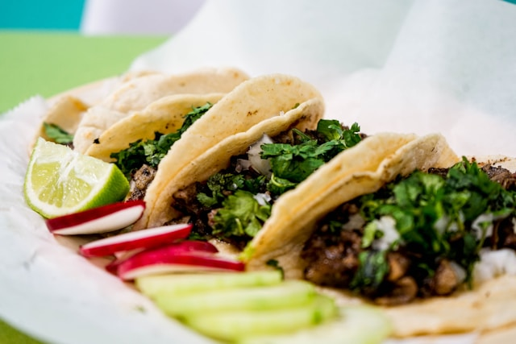

Tacos

Description
These tacos are a flavorful and fun dish that everyone will love.
Ingredients
- 1 pound ground beef
- 1 packet taco seasoning
- 8 taco shells
- 1 cup shredded lettuce
- 1 cup diced tomatoes
- 1 cup shredded cheddar cheese
- 1/2 cup sour cream
- Salsa, for serving
Steps
- In a large skillet, cook ground beef over medium heat until browned. Drain fat.
- Add taco seasoning and water according to package instructions. Simmer for 5 minutes.
- Warm taco shells according to package instructions.
- Fill taco shells with beef mixture. Top with lettuce, tomatoes, cheese, sour cream, and salsa.